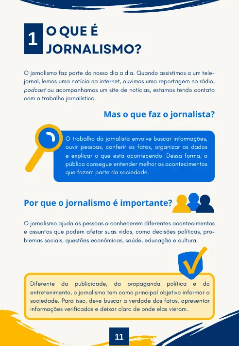
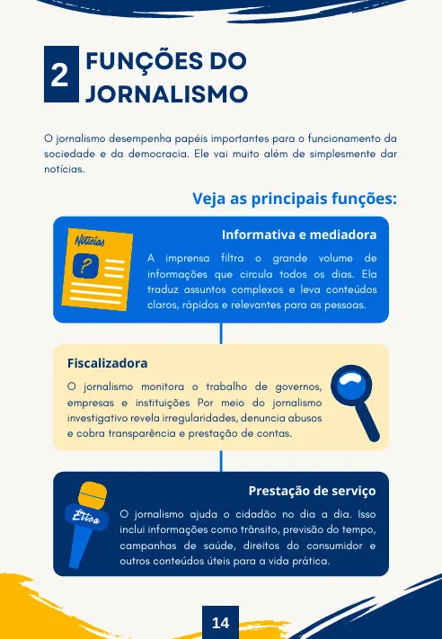
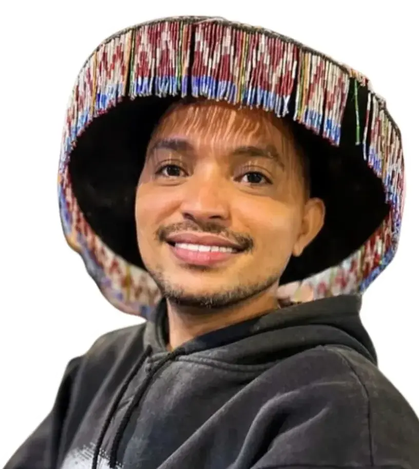

PARTE 1 · CONCEITOS
Do que estamos falando, para quê e para quem?
Conheça as funções do jornalismo, os desafios da desinformação, os critérios de noticiabilidade e os princípios que orientam a profissão.
FUNDAMENTOSUm guia para refletir sobre o que realmente importa: informar com responsabilidade, relevância e compromisso com a sociedade.
Em um ambiente marcado pela velocidade das redes sociais, pela disputa por atenção e pela circulação de desinformação, fazer jornalismo exige escolhas conscientes.
Este guia propõe uma reflexão sobre a diferença entre interesse público e interesse do público, aproximando conceitos, princípios éticos e situações reais da prática jornalística digital.
Entenda o que você vai encontrarO jornalismo transformou-se num negócio com um número crescente de proprietários que começaram a publicar jornais com o intuito de ter lucros e o objetivo central seria a expansão da circulação. A emergência do jornalismo com os seus próprios "padrões de desempenho e integridade moral" tornou-se possível com a crescente independência econômica dos jornais em relação aos subsídios políticos, método dominante de financiamento da imprensa.
A circulação de notícias nesses ambientes é marcada por disputas simbólicas e temos que favorecem conteúdo de alto impacto emocional. Isso pode reforçar a confusão o que é relevante socialmente e o que é apenas popular.
Uma leitura que conecta fundamentos do jornalismo, parâmetros éticos e exemplos concretos para pensar a comunicação nas plataformas digitais.
PARTE 1 · CONCEITOS
Conheça as funções do jornalismo, os desafios da desinformação, os critérios de noticiabilidade e os princípios que orientam a profissão.
FUNDAMENTOSPARTE 2 · PARÂMETROS
Reflita sobre viralização, métricas, fake news, inteligência artificial, publicidade, sensacionalismo e coberturas responsáveis.
ÉTICA E RESPONSABILIDADEPARTE 3 · EXEMPLOS
Compare reportagens reais e observe como relevância social, curiosidade e repercussão podem conduzir a escolhas diferentes.
ANÁLISE NA PRÁTICAO material combina explicações acessíveis, exemplos jornalísticos, quadros de atenção, perguntas para reflexão e orientações que podem ser consultadas no cotidiano profissional.
Quero conhecer o guia

O guia reúne contribuições de profissionais que ajudam a aprofundar a reflexão sobre ética, interesse público e os desafios da comunicação.
Jornalista e professor da Universidade Federal de Santa Catarina (UFSC), pesquisador do CNPq e secretário de Educação, Cultura e Aperfeiçoamento Profissional da Fenaj.

Jornalista, advogado e fundador da Agência Maracá, com experiência em comunicação e atuação profissional.
Doutora, jornalista e fundadora da Coar, com atuação ligada à comunicação e ao enfrentamento da desinformação.
Conheça o guia completo e aprofunde sua reflexão sobre o papel do jornalismo na sociedade digital.